Work Notes and Code
1. About
This section will outline the steps taken prepare the public dataset data for use in making the Tableau dashboards, as well as cite sources and show queries used. This data only covers years 1910 to 2021.
2. Clean-up
Cleaning your data would be the first step to take after acquiring it, however this public dataset appears to already be cleaned
Public dataset page on Google MarketplaceTo double check that the dataset was indeed free of null values, I used the following query to check each column for null values, just change the column name in the where clause to check each column:
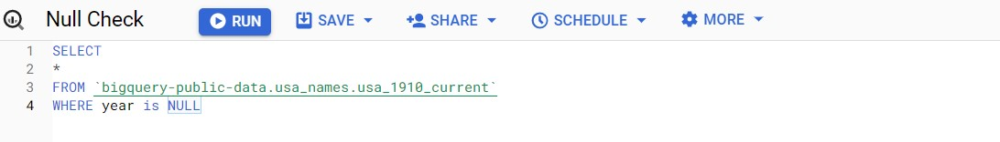3. SQL Queries
With Clean data, the next step is transforming it to have what is needed for the data visualizations in Tableau. Tableau was chosen for this project because its dashboards allow for a high level of polish with regards to presentation as well as simplicity of use if you want to make intereactive elements, such as the first two dashboards. The fist step will be to create a new table using the original data set. This new table will hold a column with each unique name, their character length, vowel and consonant counts, which will be used for a couple of dashboards. The following query will do just that.
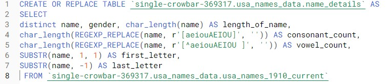Next, we'll use a query that will create a new column in the original dataset that will hold the value of the decade that the year value belongs to (e.g "1990s" if the year is 1992).
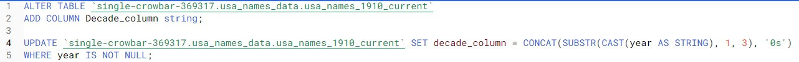Next, we need to add an additional column that will be needed for the dashboards that use a map of the U.S. as a filter. The standard map projection found in Tableau distorts Alaska's size which makes having all 50 states visible hard because the continental U.S. states have to be much smaller. To fix this, We will add a .shp file that has a more accurate representation of Alaska as well as having it and Hawaii close to the other states. In order to sync up the data to this file, FIPS codes that correspond with each state will be added as a new column. To add these codes, a join table will be created and used. There is a blog post with more details and the files here. One of the files has fips codes and states which will serve as the basis for join table. In excel, we add a state abbreviation column with the two-letter abbreviation for each state that will be the join between this and the names dataset. Next, this join table is uploaded into BigQuery and the following query will be used to join the data.
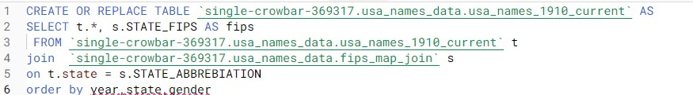The next step is to create a copy of the dataset that is grouped by name, state, decade, gender columns and sums the number by column by the grouping. This copy will be the basis of the "Top 10" dashboard.
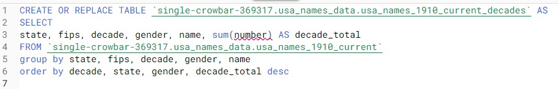now we'll create new columns in the two datasets we have. These new columns will have the ranking of the of the name based on number of people born with that name during that year/decade, of that gender and in that state. This information will be used in the tooltips of the dashboard as additional info.
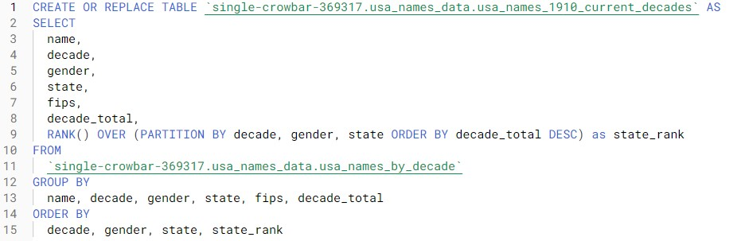 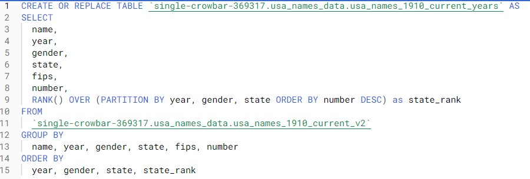We will also add a national ranking value to each record to see how naming conventions deviate between individual states and nation-wide trends. The easiest way to do this is to create temp tables that have the data grouped the way we needed and create a rank value like how we did with
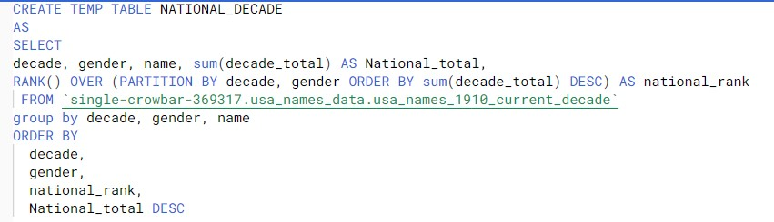 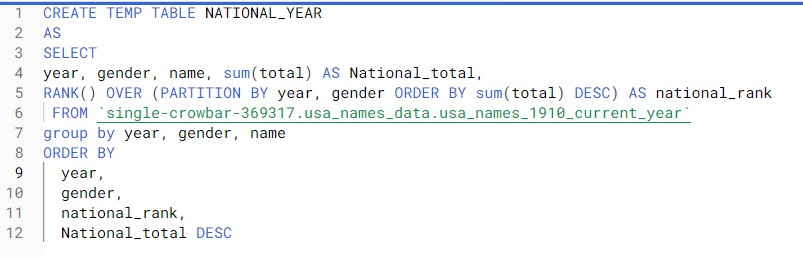Once these temp tables are created, we can join the national rankings back to the rest of the records where they have the same name, year/decade, and gender.
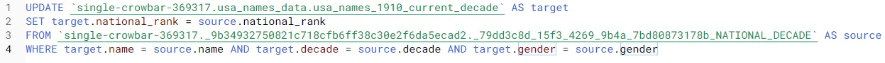 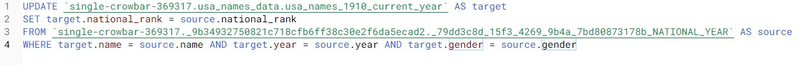With this, the tables are ready to be used in creating dashboards on Tableau. The first step is exporting what we have in BigQuery to Google Cloud Storage as CSV files. From here, the data can be downloaded and the uploaded manually to Tableau on creating a new visualization.
4. Visualizations
Now all that is left is to connect the dataset files as the source, build the separate components as sheets and combine them into dashboards. Since there are already many resources out there with regards to creating Tableau sheets and dashboards, I wont go into too much detail in this section. However, I will go over some of the more complicated aspects of the visualization might give people trouble. The first of these is the custom map, which requires a .shp file. This type of file can't be uploaded on the Tableau Public online portal and instead needs to be added using the destop version. Also, there are a couple of other files that need to be in the same directory as the .shp file when it's uploaded or otherwise it won't have the needed info to work properly. I was able to find a state map file created by Sarah Battersby, which you can find here, and saved all the corresponding files in the same directory as such:
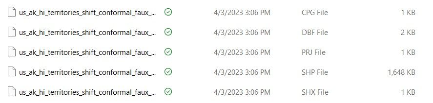With the map created, you can it as a filter using dashboard actions in similar fashion as it was done here. The same strategy can be used to make a timeline filter too.
5. Citations
- Time. “Why There Are So Many More Names for Baby Girls,” May 10, 2016. https://time.com/4322881/baby-names-girls-boys/
- Google Cloud console. “Google Cloud Console,” n.d. https://console.cloud.google.com/marketplace/product/social-security-administration/us-names
- Flerlage, Kevin.“Alternative Map Projections in Tableau.” The Flerlage Twins: Analytics, Data Visualization, and Tableau, March 22, 2021. https://www.flerlagetwins.com/2021/03/alternative-map-projections-in-tableau.html
- How to use legends as filters in a dashboard: Tableau Software. How To Use Legends As Filters In A Dashboard | Tableau Software. (n.d.). Retrieved January 15, 2023, from https://kb.tableau.com/articles/HowTo/how-to-use-legends-as-filters-in-a-dashboard
- Battersby, Sarah.“New Spatial Files - Tableau Community Forums,” n.d. https://community.tableau.com/s/news/a0A4T000002NGVhUAO/new-spatial-files?t=1681415626621